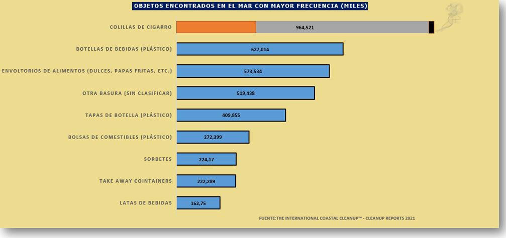
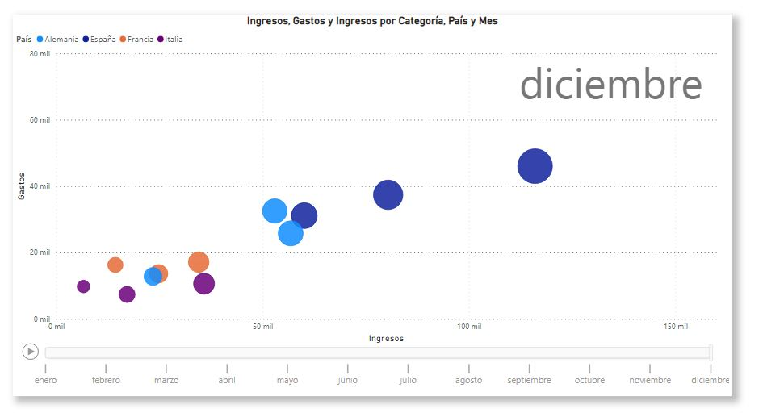

Proyectos Visualizaciones
-
Gastos Armamento Militar por Pais.
-
Contaminación Mares
-
Ingresos y Gastos por Categoría y Mes (Dispersión)
Se analizó Dataset para conocer como ha sido la relación ingresos-gastos dentro de un año calendario.
Se pudo conocer la relación existente entre las variables, a mayores ingresos, como consecuencia se han
obtenido unos mayores gastos. Existe una relación lineal positiva entre variable ingresos y variable gastos.
Se analizó Dataset para conocer cual era el gasto en Armamento Militar por País al cierre de Febrero de 2022. En el mismo, se pudo observar que Estados Unidos es el País con mayor Gasto realizado. Rusia por su parte se encuentra en la posición Nº 4. Importante mencionar, que en según este informe Ukrania se encuentra en la posición Nº 15.

Se analizó Dataset para conocer cual era el objeto mas común encontrado dentro de los desperdicios del mar. En el mismo, se pudo conocer que las colillas de cigarro encabezan en listado. No muy lejos, encontramos botellas de plástico y envoltorios.


Dashboard
Se elaboró Dashboard con la intención de conocer variables relacionadas a la facturación de una empresa. En el mismo se analizó la cantidad de ventas por ciudad, asesor, categoría y cliente en un periodo de tiempo determinado.